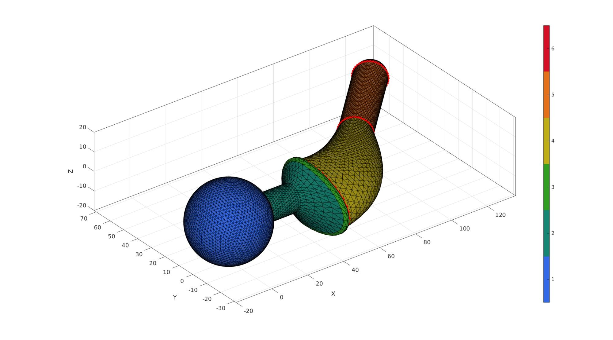
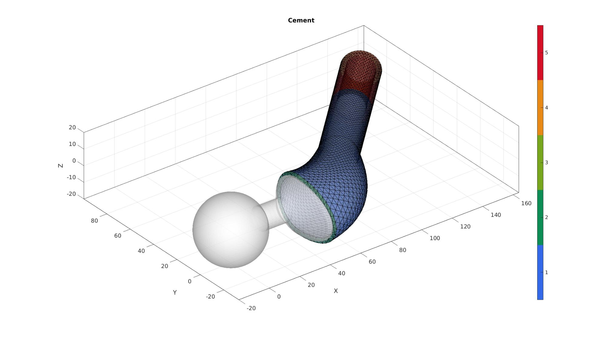
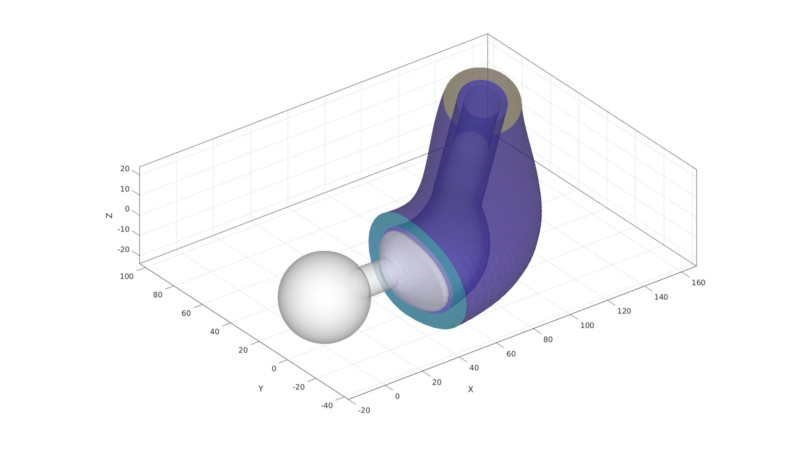
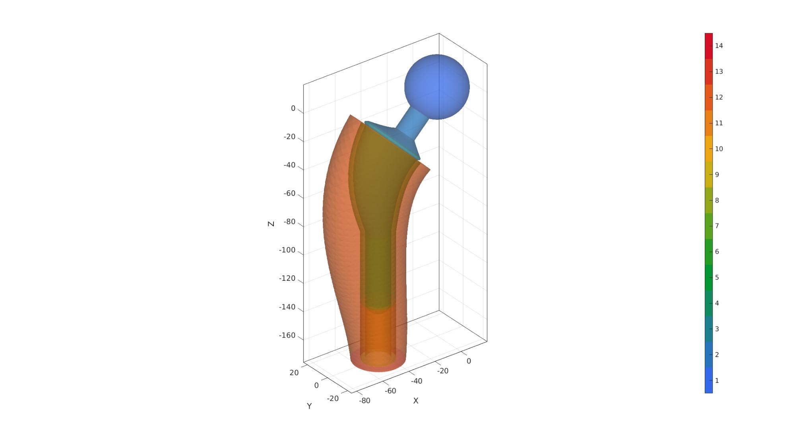
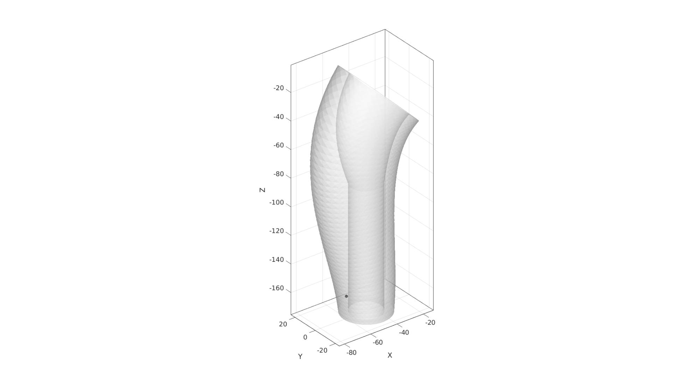
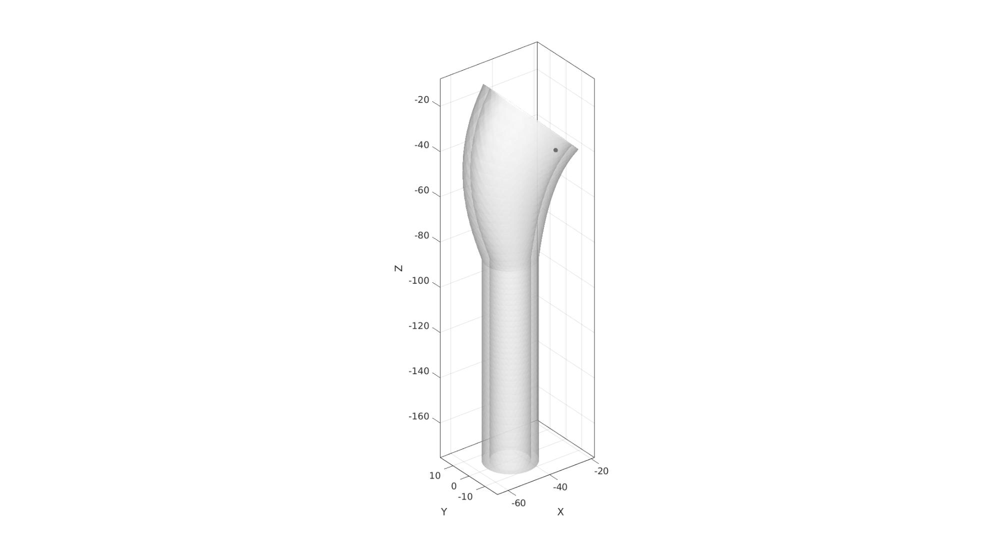
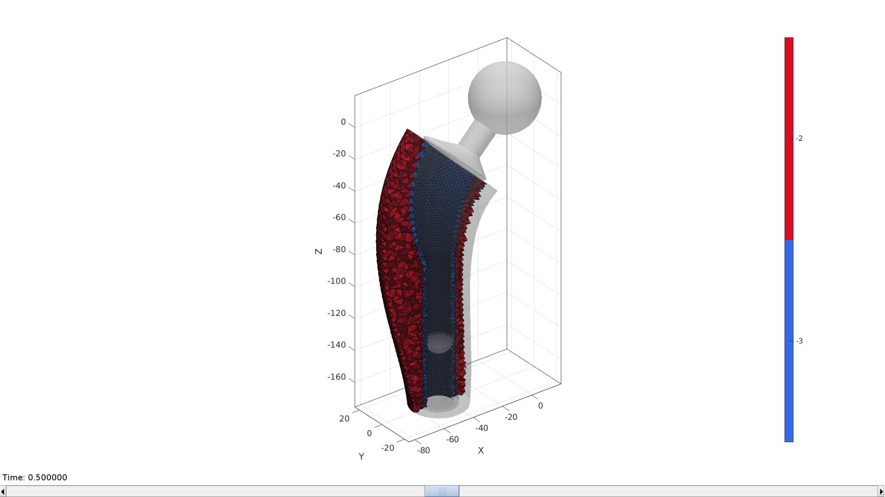
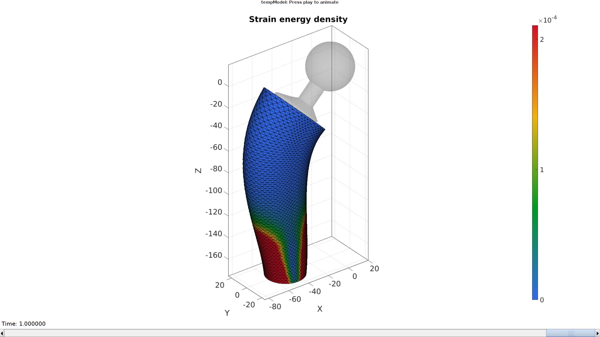

DEMO_febio_0051_hip_implant_01
Below is a demonstration for:
- Building geometry for a a hip implant and bone
Contents
Keywords
- febio_spec version 4.0
- febio, FEBio
- parameterised hip creation
- Tetrahedral meshing, tet4
- force control boundary condition
- static, solid
- displacement logfile
- stress logfile
clear; close all; clc;
Plot settings
fontSize=20; faceAlpha1=0.8; markerSize=40; markerSize2=20; lineWidth=3;
Control parameters
% Path names defaultFolder = fileparts(fileparts(mfilename('fullpath'))); savePath=fullfile(defaultFolder,'data','temp'); % Defining file names febioFebFileNamePart='tempModel'; febioFebFileName=fullfile(savePath,[febioFebFileNamePart,'.feb']); %FEB file name febioLogFileName=fullfile(savePath,[febioFebFileNamePart,'.txt']); %FEBio log file name febioLogFileName_disp=[febioFebFileNamePart,'_disp_out.txt']; %Log file name for exporting displacement febioLogFileName_force=[febioFebFileNamePart,'_force_out.txt']; %Log file name for exporting force febioLogFileName_stress=[febioFebFileNamePart,'_stress_out.txt']; %Log file name for exporting stresses febioLogFileName_strainEnergy=[febioFebFileNamePart,'_energy_out.txt']; %Log file name for exporting strain energy density %Define applied force forceBody=-(120*9.81)/2; %Material parameters (MPa if spatial units are mm) % Cortical bone E_youngs1=17000; %Youngs modulus nu1=0.25; %Poissons ratio % Cement E_youngs2=1500; %Youngs modulus nu2=0.25; %Poissons ratio % FEA control settings numTimeSteps=10; %Number of time steps desired max_refs=25; %Max reforms max_ups=0; %Set to zero to use full-Newton iterations opt_iter=10; %Optimum number of iterations max_retries=5; %Maximum number of retires dtmin=(1/numTimeSteps)/100; %Minimum time step size dtmax=1/numTimeSteps; %Maximum time step size symmetric_stiffness=1; runMode='external'; %'external' or 'internal'
n1=[1 0 0]; n2=vecnormalize([1 1 0]); boneExtension=40; cementThickness=3; boneBaseThickness=6; boneScaleFactors=[1.1 1.1]; volumeFactor=10; hipParStruct.ballRadius=20; hipParStruct.stickRadius=7; hipParStruct.stickLength=21; hipParStruct.stickLengthStraight=hipParStruct.stickLength-6; hipParStruct.neckRadius=15; hipParStruct.neckEllipseScale=2; hipParStruct.collarThickness=3; hipParStruct.loftOffset=20; hipParStruct.loftLenght=40; hipParStruct.stemRadius=8; hipParStruct.stemLength=50; hipParStruct.stemAngle=0.25*pi; hipParStruct.pointSpacing=2;
[F_implant,V_implant,C_implant,curveSet]=parHipImplant(hipParStruct);
Qz=euler2DCM([0 0 0.25*pi]);
Qy=euler2DCM([0 -0.5*pi 0 ]);
Qzz=euler2DCM([0 0 0.5*pi]);
pointSpacing=mean(patchEdgeLengths(F_implant,V_implant));
[~,~,N_implant]=patchNormal(F_implant,V_implant);
indTop=curveSet{2};
indBottom=curveSet{4};
cFigure; hold on; gpatch(F_implant,V_implant,C_implant,'k',1); % gpatch(F_bone,V_bone,boneColor,'k',1); for q=1:1:numel(curveSet) plotV(V_implant(curveSet{q},:),'r.-','MarkerSize',25,'LineWidth',3); end axisGeom; camlight headlight; colormap gjet; icolorbar; drawnow;
logicSelect=ismember(C_implant,[4 5]); F_cement=F_implant(logicSelect,:); C_cement=C_implant(logicSelect); V_cement=V_implant; [F_cement,V_cement,indFix]=patchCleanUnused(F_cement,V_cement); indTopCement=indFix(indTop); indBottomCement=indFix(indBottom); [~,~,N_cement]=patchNormal(F_cement,V_cement); Eb_cement=patchBoundary(F_cement,V_cement); indBoundaryCement=unique(Eb_cement); N_cement(indTopCement,1)=0; N_cement(indTopCement,:)=vecnormalize(N_cement(indTopCement,:)); V_cement=V_cement+cementThickness.*N_cement; F_cement=F_cement(C_cement~=6,:); [F_cement,V_cement]=patchCleanUnused(F_cement,V_cement);
Warning: Second input (vertices) no longer required. Update code to avoid future error.
numStepsExtrude=ceil(boneExtension./pointSpacing); numStepsExtrude=numStepsExtrude+double(iseven(numStepsExtrude)); clear cParExtrude; cParExtrude.depth=boneExtension; cParExtrude.patchType='tri'; cParExtrude.dir=1; cParExtrude.n=n2; cParExtrude.closeLoopOpt=1; cParExtrude.numSteps=numStepsExtrude; [F_cement_extInner,V_cement_extInner]=polyExtrude(V_implant(indBottom,:),cParExtrude); indEndCementInner=numStepsExtrude:numStepsExtrude:size(V_cement_extInner,1); [F_cement_extOuter,V_cement_extOuter]=polyExtrude(V_cement(indBottomCement,:),cParExtrude); indEndCementOuter=numStepsExtrude:numStepsExtrude:size(V_cement_extOuter,1);
pointSpacingNow=mean(sqrt(sum(diff(V_cement_extOuter(indEndCementOuter,:),1,1).^2,2)));
[F_cement_bottom,V_cement_bottom]=regionTriMesh3D({V_cement_extOuter(indEndCementOuter,:),...
V_cement_extInner(indEndCementInner,:)},pointSpacingNow,0,'linear');
N_cement_bottom=mean(patchNormal(F_cement_bottom,V_cement_bottom),1);
if dot(N_cement_bottom,n2)<1
F_cement_bottom=fliplr(F_cement_bottom);
end
pointSpacingNow=mean(sqrt(sum(diff(V_implant(indTop,:),1,1).^2,2)));
[F_cement_top,V_cement_top]=regionTriMesh3D({V_implant(indTop,:),...
V_cement(indTopCement,:)},pointSpacingNow,0,'linear');
N_cement_top=mean(patchNormal(F_cement_top,V_cement_top),1);
if dot(N_cement_top,[1 0 0])>0
F_cement_top=fliplr(F_cement_top);
end
[Fc,Vc,Cc]=joinElementSets({F_cement,F_cement_top,F_cement_bottom,F_cement_extInner,F_cement_extOuter},...
{V_cement,V_cement_top,V_cement_bottom,V_cement_extInner,V_cement_extOuter});
[Fc,Vc]=mergeVertices(Fc,Vc);
cFigure; hold on; title('Cement'); gpatch(F_implant,V_implant,'w','none',0.5); gpatch(Fc,Vc,Cc,'k',0.5); colormap gjet; icolorbar; axisGeom; camlight headlight; drawnow;
N_implant(indTop,1)=0; N_implant(indTop,:)=vecnormalize(N_implant(indTop,:)); V_loft1=V_implant(indTop,:)+(boneBaseThickness+cementThickness).*N_implant(indTop,:); logicLow=V_loft1(:,2)<0; V_loft1(logicLow,2)=V_loft1(logicLow,2)*boneScaleFactors(1); V_loft1(~logicLow,2)=V_loft1(~logicLow,2)*boneScaleFactors(2); [~,indMax]=max(V_loft1(:,3)); if indMax>1 V_loft1=V_loft1([indMax:size(V_loft1,1) 1:indMax-1],:); end V_loft2=V_implant(indBottom,:)+(boneBaseThickness+cementThickness).*N_implant(indBottom,:); V_loft2=V_loft2+boneExtension*n2(ones(size(V_loft2,1),1),:); [~,indMax]=max(V_loft2(:,3)); if indMax>1 V_loft2=V_loft2([indMax:size(V_loft2,1) 1:indMax-1],:); end V_loft2=flipud(V_loft2); p1=mean(V_loft1,1); p2=mean(V_loft2,1); d=sqrt(sum((p1-p2).^2)); numStepsCurve=ceil(d/pointSpacing); numStepsCurve=numStepsCurve+double(iseven(numStepsCurve)); f=d/3; p=[p1;p1+f*n1; p2-f*n2;p2]; Vg=bezierCurve(p,numStepsCurve); [F_loft,V_loft,C_loft]=sweepLoft(V_loft1,V_loft2,n1,n2,Vg); E=F_loft(iseven(C_loft),[1 2]); VE=patchCentre(E,V_loft); V_loft(E(:,1),:)=VE; indTopBone=1:numStepsCurve:size(V_loft,1); indBottomBone=numStepsCurve:numStepsCurve:size(V_loft,1); [F_loft,V_loft,C_loft]=quad2tri(F_loft,V_loft,'a',C_loft);
pointSpacingNow=mean(sqrt(sum(diff(V_loft(indTopBone,:),1,1).^2,2)));
[F_bone_top,V_bone_top]=regionTriMesh3D({V_loft(indTopBone,:),...
V_cement(indTopCement,:)},pointSpacingNow,0,'linear');
N_bone_top=mean(patchNormal(F_bone_top,V_bone_top),1);
if dot(N_bone_top,[1 0 0])>0
F_bone_top=fliplr(F_bone_top);
end
pointSpacingNow=mean(sqrt(sum(diff(V_loft(indBottomBone,:),1,1).^2,2)));
[F_bone_bottom,V_bone_bottom]=regionTriMesh3D({V_loft(indBottomBone,:),...
V_cement_extOuter(indEndCementOuter,:)},pointSpacingNow,0,'linear');
N_bone_bottom=mean(patchNormal(F_bone_bottom,V_bone_bottom),1);
if dot(N_bone_bottom,[1 0 0])>0
F_bone_bottom=fliplr(F_bone_bottom);
end
[F_bone,V_bone,C_bone]=joinElementSets({F_loft,F_bone_top,F_bone_bottom},...
{V_loft,V_bone_top,V_bone_bottom});
[F_bone,V_bone]=mergeVertices(F_bone,V_bone);
cFigure; hold on; gpatch(F_implant,V_implant,'w','none',0.5); gpatch(Fc,Vc,'bw','none',0.5); gpatch(F_bone,V_bone,C_bone,'none',0.5); axisGeom; camlight headlight; drawnow;
C_bone=C_bone+max(C_implant)+max(Cc);
Cc=Cc+max(C_implant);
[FT,VT,CT]=joinElementSets({F_implant,Fc,F_bone},{V_implant,Vc,V_bone},{C_implant,Cc,C_bone});
[FT,VT]=mergeVertices(FT,VT);
VT=VT*Qz*Qy*Qzz;
cFigure; hold on; gpatch(FT,VT,CT,'none',0.5); axisGeom; camlight headlight; colormap gjet; icolorbar; drawnow;
logicBone=ismember(CT,[7 11 12 13 14]); V_inner_bone=getInnerPoint(FT(logicBone,:),VT); cFigure; hold on; gpatch(FT(logicBone,:),VT,'w','none',0.5); plotV(V_inner_bone,'k.','MarkerSize',25) axisGeom; camlight headlight; drawnow;
logicCement=ismember(CT,[4 5 7 8 9 10 11]); V_inner_cement=getInnerPoint(FT(logicCement,:),VT);
cFigure; hold on; gpatch(FT(logicCement,:),VT,'w','none',0.5); plotV(V_inner_cement,'k.','MarkerSize',25) axisGeom; camlight headlight; drawnow;
F_solid=FT(logicCement | logicBone,:); C_solid=CT(logicCement | logicBone); [F_solid,V_solid]=patchCleanUnused(F_solid,VT); logicImplant=ismember(CT,1:6); F_implant=FT(logicImplant,:); C_implant=CT(logicImplant); [F_implant,V_implant]=patchCleanUnused(F_implant,VT);
Regional mesh volume parameter
tetVolumes(1)=tetVolMeanEst(FT(logicBone,:),VT); %Volume for regular tets tetVolumes(2)=tetVolMeanEst(FT(logicCement,:),VT); %Volume for regular tets tetGenStruct.stringOpt='-pq1.2AaY'; tetGenStruct.Faces=F_solid; tetGenStruct.Nodes=V_solid; tetGenStruct.holePoints=[]; tetGenStruct.faceBoundaryMarker=C_solid; %Face boundary markers tetGenStruct.regionPoints=[V_inner_bone;V_inner_cement]; %region points tetGenStruct.regionA=tetVolumes*volumeFactor; [meshOutput]=runTetGen(tetGenStruct); %Run tetGen % Access elements, nodes, and boundary faces E_solid=meshOutput.elements; V_solid=meshOutput.nodes; Fb_solid=meshOutput.facesBoundary; Cb_solid=meshOutput.boundaryMarker; CE_solid=meshOutput.elementMaterialID;
%%%%%%%%%%%%%%%%%%%%%%%%%%%%%%%%%%%%%%%%%%%%% --- TETGEN Tetrahedral meshing --- 21-Apr-2023 10:53:38 %%%%%%%%%%%%%%%%%%%%%%%%%%%%%%%%%%%%%%%%%%%%% --- Writing SMESH file --- 21-Apr-2023 10:53:38 ----> Adding node field ----> Adding facet field ----> Adding holes specification ----> Adding region specification --- Done --- 21-Apr-2023 10:53:38 --- Running TetGen to mesh input boundary--- 21-Apr-2023 10:53:38 Opening /mnt/data/MATLAB/GIBBON/data/temp/temp.smesh. Delaunizing vertices... Delaunay seconds: 0.319242 Creating surface mesh ... Surface mesh seconds: 0.025246 Recovering boundaries... Boundary recovery seconds: 0.077812 Removing exterior tetrahedra ... Spreading region attributes. Exterior tets removal seconds: 0.024774 Recovering Delaunayness... Delaunay recovery seconds: 0.04799 Refining mesh... Refinement seconds: 0.295274 Smoothing vertices... Mesh smoothing seconds: 0.514086 Improving mesh... Mesh improvement seconds: 0.021089 Writing /mnt/data/MATLAB/GIBBON/data/temp/temp.1.node. Writing /mnt/data/MATLAB/GIBBON/data/temp/temp.1.ele. Writing /mnt/data/MATLAB/GIBBON/data/temp/temp.1.face. Writing /mnt/data/MATLAB/GIBBON/data/temp/temp.1.edge. Output seconds: 0.214143 Total running seconds: 1.54053 Statistics: Input points: 11942 Input facets: 23964 Input segments: 35906 Input holes: 0 Input regions: 2 Mesh points: 18060 Mesh tetrahedra: 87221 Mesh faces: 182424 Mesh faces on exterior boundary: 15964 Mesh faces on input facets: 23964 Mesh edges on input segments: 35906 Steiner points inside domain: 6118 --- Done --- 21-Apr-2023 10:53:40 %%%%%%%%%%%%%%%%%%%%%%%%%%%%%%%%%%%%%%%%%%%%% --- Importing TetGen files --- 21-Apr-2023 10:53:40 --- Done --- 21-Apr-2023 10:53:40
V=[V_solid;V_implant];
F_implant=F_implant+size(V_solid,1);
numDigitsMerge=6-numOrder(mean(patchEdgeLengths(F_implant,V)));
[~,indKeep,indFix]=unique(pround(V,numDigitsMerge),'rows');
V=V(indKeep,:);
F_implant=indFix(F_implant);
E_solid=indFix(E_solid);
Fb_solid=indFix(Fb_solid);
E_cement=E_solid(CE_solid==-3,:);
E_bone=E_solid(CE_solid==-2,:);
E_solid=[E_bone;E_cement];
Visualizing solid mesh
hFig=cFigure; hold on; gpatch(F_implant,V,'w','none',0.5); optionStruct.hFig=hFig; meshView(meshOutput,optionStruct); axisGeom; drawnow;
Visualizing boundary conditions
F_bottomSupport=Fb_solid(ismember(Cb_solid,[9 14]),:); bcSupportList=unique(F_bottomSupport(:)); hFig=cFigure; hold on; gpatch(Fb_solid,V,'kw','none',0.25); hl(1)=plotV(V(bcSupportList,:),'k.','MarkerSize',25); hl(2)=gpatch(F_implant,V,'rw','r',1); legend(hl,{'BC support','BC prescribe'}); axisGeom; camlight headlight; drawnow;
Defining the FEBio input structure
See also febioStructTemplate and febioStruct2xml and the FEBio user manual.
%Get a template with default settings [febio_spec]=febioStructTemplate; %febio_spec version febio_spec.ATTR.version='4.0'; %Module section febio_spec.Module.ATTR.type='solid'; %Control section febio_spec.Control.analysis='STATIC'; febio_spec.Control.time_steps=numTimeSteps; febio_spec.Control.step_size=1/numTimeSteps; febio_spec.Control.solver.max_refs=max_refs; febio_spec.Control.solver.qn_method.max_ups=max_ups; febio_spec.Control.time_stepper.dtmin=dtmin; febio_spec.Control.time_stepper.dtmax=dtmax; febio_spec.Control.time_stepper.max_retries=max_retries; febio_spec.Control.time_stepper.opt_iter=opt_iter; %Material section materialName1='Material1'; febio_spec.Material.material{1}.ATTR.name=materialName1; febio_spec.Material.material{1}.ATTR.type='neo-Hookean'; febio_spec.Material.material{1}.ATTR.id=1; febio_spec.Material.material{1}.E=E_youngs1; febio_spec.Material.material{1}.v=nu1; materialName2='Material2'; febio_spec.Material.material{2}.ATTR.name=materialName2; febio_spec.Material.material{2}.ATTR.type='neo-Hookean'; febio_spec.Material.material{2}.ATTR.id=2; febio_spec.Material.material{2}.E=E_youngs2; febio_spec.Material.material{2}.v=nu2; materialName3='Material3'; febio_spec.Material.material{3}.ATTR.name=materialName3; febio_spec.Material.material{3}.ATTR.type='rigid body'; febio_spec.Material.material{3}.ATTR.id=3; febio_spec.Material.material{3}.density=1; febio_spec.Material.material{3}.center_of_mass=[0 0 0]; %Mesh section % -> Nodes febio_spec.Mesh.Nodes{1}.ATTR.name='nodeSet_all'; %The node set name febio_spec.Mesh.Nodes{1}.node.ATTR.id=(1:size(V,1))'; %The node id's febio_spec.Mesh.Nodes{1}.node.VAL=V; %The nodel coordinates % -> Elements partName1='Part1'; febio_spec.Mesh.Elements{1}.ATTR.name=partName1; %Name of this part febio_spec.Mesh.Elements{1}.ATTR.type='tet4'; %Element type febio_spec.Mesh.Elements{1}.elem.ATTR.id=(1:1:size(E_bone,1))'; %Element id's febio_spec.Mesh.Elements{1}.elem.VAL=E_bone; %The element matrix partName2='Part2'; febio_spec.Mesh.Elements{2}.ATTR.name=partName2; %Name of this part febio_spec.Mesh.Elements{2}.ATTR.type='tet4'; %Element type febio_spec.Mesh.Elements{2}.elem.ATTR.id=size(E_bone,1)+(1:1:size(E_cement,1))'; %Element id's febio_spec.Mesh.Elements{2}.elem.VAL=E_cement; %The element matrix partName3='Part3'; febio_spec.Mesh.Elements{3}.ATTR.name=partName3; %Name of this part febio_spec.Mesh.Elements{3}.ATTR.type='tri3'; %Element type febio_spec.Mesh.Elements{3}.elem.ATTR.id=size(E_bone,1)+size(E_cement,1)+(1:1:size(F_implant,1))'; %Element id's febio_spec.Mesh.Elements{3}.elem.VAL=F_implant; %The element matrix % -> NodeSets nodeSetName1='bcSupportList'; febio_spec.Mesh.NodeSet{1}.ATTR.name=nodeSetName1; febio_spec.Mesh.NodeSet{1}.VAL=mrow(bcSupportList); %MeshDomains section febio_spec.MeshDomains.SolidDomain{1}.ATTR.name=partName1; febio_spec.MeshDomains.SolidDomain{1}.ATTR.mat=materialName1; febio_spec.MeshDomains.SolidDomain{2}.ATTR.name=partName2; febio_spec.MeshDomains.SolidDomain{2}.ATTR.mat=materialName2; febio_spec.MeshDomains.ShellDomain{1}.ATTR.name=partName3; febio_spec.MeshDomains.ShellDomain{1}.ATTR.mat=materialName3; %Boundary condition section % -> Fix boundary conditions febio_spec.Boundary.bc{1}.ATTR.name='zero_displacement_xyz'; febio_spec.Boundary.bc{1}.ATTR.type='zero displacement'; febio_spec.Boundary.bc{1}.ATTR.node_set=nodeSetName1; febio_spec.Boundary.bc{1}.x_dof=1; febio_spec.Boundary.bc{1}.y_dof=1; febio_spec.Boundary.bc{1}.z_dof=1; %Rigid section % ->Rigid body fix boundary conditions % febio_spec.Rigid.rigid_bc{1}.ATTR.name='RigidFix'; % febio_spec.Rigid.rigid_bc{1}.ATTR.type='rigid_fixed'; % febio_spec.Rigid.rigid_bc{1}.rb=3; % febio_spec.Rigid.rigid_bc{1}.Rx_dof=1; % febio_spec.Rigid.rigid_bc{1}.Ry_dof=1; % febio_spec.Rigid.rigid_bc{1}.Ru_dof=1; % febio_spec.Rigid.rigid_bc{1}.Rv_dof=1; % febio_spec.Rigid.rigid_bc{1}.Rw_dof=1; % ->Rigid body prescribe boundary conditions febio_spec.Rigid.rigid_load{1}.ATTR.name='RigidPrescribedForce'; febio_spec.Rigid.rigid_load{1}.ATTR.type='rigid_force'; febio_spec.Rigid.rigid_load{1}.rb=3; febio_spec.Rigid.rigid_load{1}.dof='Rz'; febio_spec.Rigid.rigid_load{1}.value.ATTR.lc=1; febio_spec.Rigid.rigid_load{1}.value.VAL=forceBody; febio_spec.Rigid.rigid_load{1}.load_type=0; %LoadData section % -> load_controller febio_spec.LoadData.load_controller{1}.ATTR.name='LC_1'; febio_spec.LoadData.load_controller{1}.ATTR.id=1; febio_spec.LoadData.load_controller{1}.ATTR.type='loadcurve'; febio_spec.LoadData.load_controller{1}.interpolate='LINEAR'; %febio_spec.LoadData.load_controller{1}.extend='CONSTANT'; febio_spec.LoadData.load_controller{1}.points.pt.VAL=[0 0; 1 1]; %Output section % -> log file febio_spec.Output.logfile.ATTR.file=febioLogFileName; febio_spec.Output.logfile.node_data{1}.ATTR.file=febioLogFileName_disp; febio_spec.Output.logfile.node_data{1}.ATTR.data='ux;uy;uz'; febio_spec.Output.logfile.node_data{1}.ATTR.delim=','; febio_spec.Output.logfile.rigid_body_data{1}.ATTR.file=febioLogFileName_force; febio_spec.Output.logfile.rigid_body_data{1}.ATTR.data='Fx;Fy;Fz'; febio_spec.Output.logfile.rigid_body_data{1}.ATTR.delim=','; febio_spec.Output.logfile.rigid_body_data{1}.VAL=3; %Rigid body material id febio_spec.Output.logfile.element_data{1}.ATTR.file=febioLogFileName_stress; febio_spec.Output.logfile.element_data{1}.ATTR.data='s1;s2;s3'; febio_spec.Output.logfile.element_data{1}.ATTR.delim=','; febio_spec.Output.logfile.element_data{2}.VAL=1:1:size(E_solid,1); febio_spec.Output.logfile.element_data{2}.ATTR.file=febioLogFileName_strainEnergy; febio_spec.Output.logfile.element_data{2}.ATTR.data='sed'; febio_spec.Output.logfile.element_data{2}.ATTR.delim=','; febio_spec.Output.logfile.element_data{2}.VAL=1:1:size(E_solid,1); % Plotfile section febio_spec.Output.plotfile.compression=0;
Quick viewing of the FEBio input file structure
The febView function can be used to view the xml structure in a MATLAB figure window.
febView(febio_spec); %Viewing the febio file
Exporting the FEBio input file
Exporting the febio_spec structure to an FEBio input file is done using the febioStruct2xml function.
febioStruct2xml(febio_spec,febioFebFileName); %Exporting to file and domNode
Running the FEBio analysis
To run the analysis defined by the created FEBio input file the runMonitorFEBio function is used. The input for this function is a structure defining job settings e.g. the FEBio input file name. The optional output runFlag informs the user if the analysis was run succesfully.
febioAnalysis.run_filename=febioFebFileName; %The input file name febioAnalysis.run_logname=febioLogFileName; %The name for the log file febioAnalysis.disp_on=1; %Display information on the command window febioAnalysis.runMode=runMode; [runFlag]=runMonitorFEBio(febioAnalysis);%START FEBio NOW!!!!!!!!
%%%%%%%%%%%%%%%%%%%%%%%%%%%%%%%%%%%%%%%%%%%%%%%%%%%%%%%%%%%%%%%%%%%%%%%%%%%
--------> RUNNING/MONITORING FEBIO JOB <-------- 21-Apr-2023 10:53:47
FEBio path: /home/kevin/FEBioStudio2/bin/febio4
# Attempt removal of existing log files 21-Apr-2023 10:53:47
* Removal succesful 21-Apr-2023 10:53:47
# Attempt removal of existing .xplt files 21-Apr-2023 10:53:47
* Removal succesful 21-Apr-2023 10:53:47
# Starting FEBio... 21-Apr-2023 10:53:47
Max. total analysis time is: Inf s
* Waiting for log file creation 21-Apr-2023 10:53:47
Max. wait time: 30 s
* Log file found. 21-Apr-2023 10:53:48
# Parsing log file... 21-Apr-2023 10:53:48
number of iterations : 2 21-Apr-2023 10:53:52
number of reformations : 2 21-Apr-2023 10:53:52
------- converged at time : 0.1 21-Apr-2023 10:53:52
number of iterations : 2 21-Apr-2023 10:53:56
number of reformations : 2 21-Apr-2023 10:53:56
------- converged at time : 0.2 21-Apr-2023 10:53:56
number of iterations : 2 21-Apr-2023 10:54:01
number of reformations : 2 21-Apr-2023 10:54:01
------- converged at time : 0.3 21-Apr-2023 10:54:01
number of iterations : 3 21-Apr-2023 10:54:05
number of reformations : 3 21-Apr-2023 10:54:05
------- converged at time : 0.4 21-Apr-2023 10:54:05
number of iterations : 3 21-Apr-2023 10:54:10
number of reformations : 3 21-Apr-2023 10:54:10
------- converged at time : 0.5 21-Apr-2023 10:54:10
number of iterations : 3 21-Apr-2023 10:54:15
number of reformations : 3 21-Apr-2023 10:54:15
------- converged at time : 0.6 21-Apr-2023 10:54:15
number of iterations : 3 21-Apr-2023 10:54:20
number of reformations : 3 21-Apr-2023 10:54:20
------- converged at time : 0.7 21-Apr-2023 10:54:20
number of iterations : 3 21-Apr-2023 10:54:25
number of reformations : 3 21-Apr-2023 10:54:25
------- converged at time : 0.8 21-Apr-2023 10:54:25
number of iterations : 3 21-Apr-2023 10:54:30
number of reformations : 3 21-Apr-2023 10:54:30
------- converged at time : 0.9 21-Apr-2023 10:54:30
number of iterations : 3 21-Apr-2023 10:54:35
number of reformations : 3 21-Apr-2023 10:54:35
------- converged at time : 1 21-Apr-2023 10:54:35
Elapsed time : 0:00:47 21-Apr-2023 10:54:36
N O R M A L T E R M I N A T I O N
# Done 21-Apr-2023 10:54:36
%%%%%%%%%%%%%%%%%%%%%%%%%%%%%%%%%%%%%%%%%%%%%%%%%%%%%%%%%%%%%%%%%%%%%%%%%%%
Import FEBio results
if runFlag==1 %i.e. a succesful run
% Importing nodal displacements from a log file [time_mat, N_disp_mat,~]=importFEBio_logfile(fullfile(savePath,febioLogFileName_disp)); %Nodal displacements time_mat=[0; time_mat(:)]; %Time N_disp_mat=N_disp_mat(:,2:end,:); sizImport=size(N_disp_mat); sizImport(3)=sizImport(3)+1; N_disp_mat_n=zeros(sizImport); N_disp_mat_n(:,:,2:end)=N_disp_mat; N_disp_mat=N_disp_mat_n; DN=N_disp_mat(:,:,end); DN_magnitude=sqrt(sum(DN(:,3).^2,2)); V_def=V+DN;
Importing element strain energies from a log file
[~,E_energy,~]=importFEBio_logfile(fullfile(savePath,febioLogFileName_strainEnergy)); %Element strain energy %Remove nodal index column E_energy=E_energy(:,2:end,:); %Add initial state i.e. zero energy sizImport=size(E_energy); sizImport(3)=sizImport(3)+1; E_energy_mat_n=zeros(sizImport); E_energy_mat_n(:,:,2:end)=E_energy; E_energy=E_energy_mat_n;
[FE_face,C_energy_face]=element2patch(E_solid,E_energy(:,:,end),'tet4');
[CV]=faceToVertexMeasure(FE_face,V,C_energy_face);
[indBoundary]=tesBoundary(FE_face,V);
Fb_solid=FE_face(indBoundary,:);
Warning: Second input (vertices) no longer required. Update code to avoid future error.
Plotting the simulated results using anim8 to visualize and animate deformations
% Create basic view and store graphics handle to initiate animation hf=cFigure; %Open figure title('Strain energy density') gtitle([febioFebFileNamePart,': Press play to animate']); hp1=gpatch(Fb_solid,V_def,CV,'k',1); %Add graphics object to animate hp1.FaceColor='Interp'; hp2=gpatch(F_implant,V,0.5*ones(1,3),'none',0.25); %A static graphics object axisGeom(gca,fontSize); colormap(gjet(250)); colorbar; caxis([0 max(E_energy(:))/25]); axis([min(V_def(:,1)) max(V_def(:,1)) min(V_def(:,2)) max(V_def(:,2)) min(V_def(:,3)) max(V_def(:,3))]); %Set axis limits statically camlight headlight; % Set up animation features animStruct.Time=time_mat; %The time vector for qt=1:1:size(N_disp_mat,3) %Loop over time increments DN=N_disp_mat(:,:,qt); %Current displacement V_def=V+DN; %Current nodal coordinates [FE_face,C_energy_face]=element2patch(E_solid,E_energy(:,:,qt),'tet4'); [CV]=faceToVertexMeasure(FE_face,V,C_energy_face); %Set entries in animation structure animStruct.Handles{qt}=[hp1 hp1 hp2]; %Handles of objects to animate animStruct.Props{qt}={'Vertices','CData','Vertices'}; %Properties of objects to animate animStruct.Set{qt}={V_def,CV,V_def}; %Property values for to set in order to animate end anim8(hf,animStruct); %Initiate animation feature drawnow;
end
GIBBON footer text
License: https://github.com/gibbonCode/GIBBON/blob/master/LICENSE
GIBBON: The Geometry and Image-based Bioengineering add-On. A toolbox for image segmentation, image-based modeling, meshing, and finite element analysis.
Copyright (C) 2006-2022 Kevin Mattheus Moerman and the GIBBON contributors
This program is free software: you can redistribute it and/or modify it under the terms of the GNU General Public License as published by the Free Software Foundation, either version 3 of the License, or (at your option) any later version.
This program is distributed in the hope that it will be useful, but WITHOUT ANY WARRANTY; without even the implied warranty of MERCHANTABILITY or FITNESS FOR A PARTICULAR PURPOSE. See the GNU General Public License for more details.
You should have received a copy of the GNU General Public License along with this program. If not, see http://www.gnu.org/licenses/.